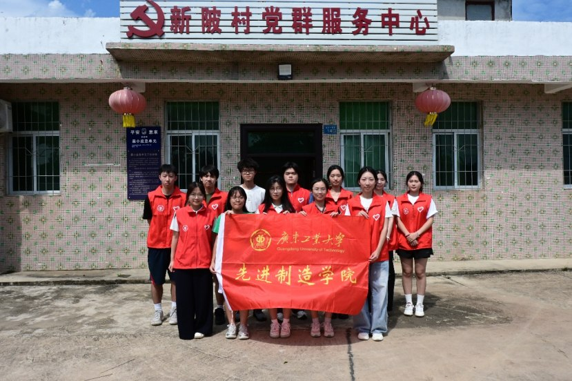
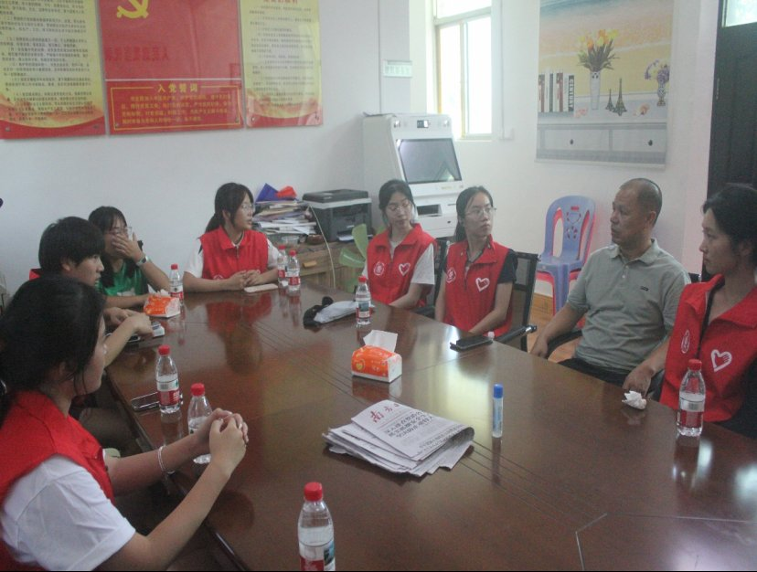
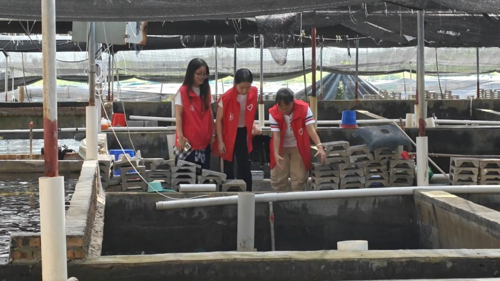
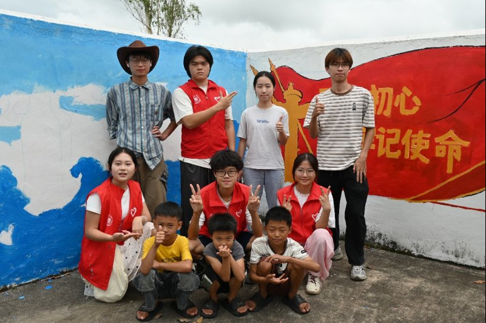
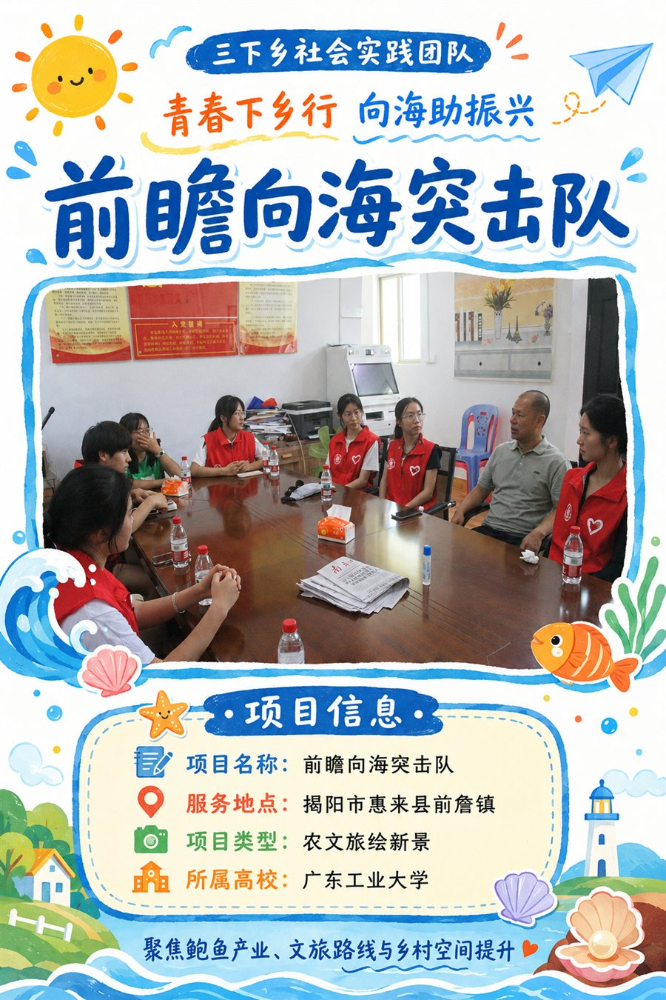
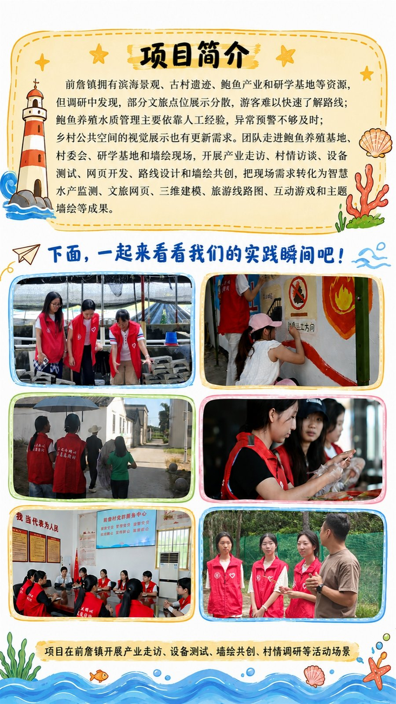
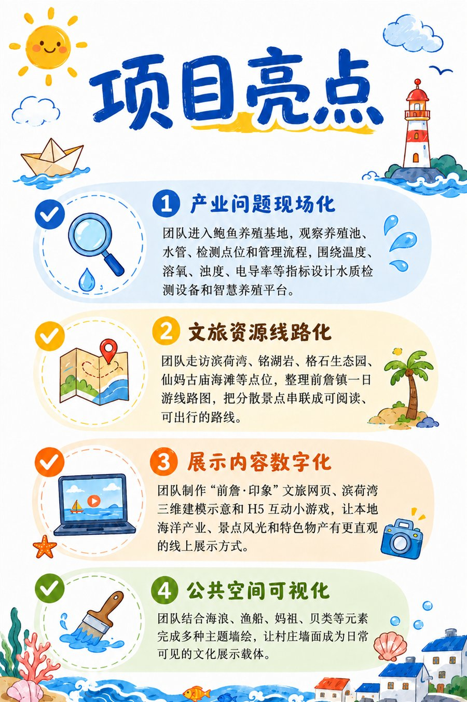
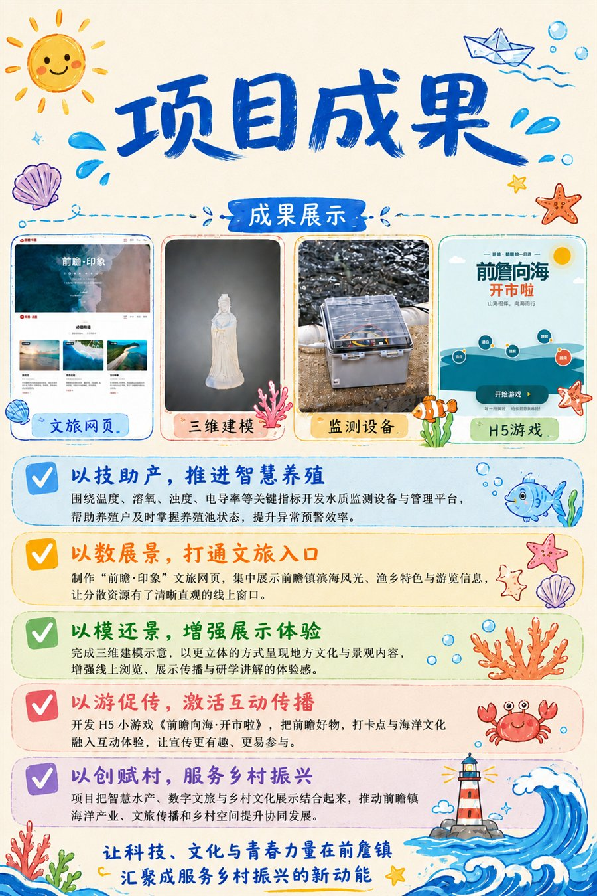

2 0 2 6 年 7 月 1 1 日 — 7 月 1 5 日 · 广 东 省 揭 阳 市 惠 来 县 前 詹 镇
本次调研活动于 2026 年 7 月 11 日至 7 月 15 日前往广东省揭阳市惠来县前詹镇，开展以"青春赋能・智汇前詹"为主题的乡村振兴调研与助农实践。广东工业大学"前瞻向海"突击队由计算机、人工智能、电气等多学科背景 20 余名学生组成，配备专业指导老师带队。
团队采用实地走访、深度访谈、参与式观察、技术测试等调研方式，深度摸排当地传统种植农业、滨海水产养殖、乡村基础基建、文旅产业发展的真实现状与核心瓶颈。本次调研全面梳理前詹镇农业、水产、文旅产业现存发展难题，依托专业落地智慧养殖、研学路线、乡村墙绘三项实践成果，为当地农文旅融合发展提供可行思路。

与村委座谈
鲍鱼养殖基地调研调 研 · 助 农 · 墙 绘 · 传 播 —— 把 论 文 写 在 南 海 之 滨
团队分组沿 22.5 公里海岸线依次走访石碑山灯塔、滨荷湾度假区、沟疏滨海度假区等滨海资源点，深入新陂村、铭东村、石峻村、沟疏村测绘传统民居、记录古迹保存状况。一对一访谈新陂村委、留守农户、沟疏养殖户、基地管理人员与文旅经营者，收集产业真实诉求，形成一批有数据、有温度的调研报告，为前詹发展贡献青年智慧。
实践队在沟疏村养殖基地部署自研智能监测设备原型机，连续多天采集水温、溶氧、电导率、浊度数据进行稳定性测试。团队成员跟随养殖户完成从水质检测到成鲍采收的作业全流程，亲身体验传统养殖模式的流程与痛点。依托计算机、机械、电气等专业力量，自主研发智慧水产养殖数字化管理平台，为养殖户配备全天候"水下哨兵"系统。

实践队组建墙绘专项小组扎根沟疏古村开展艺术美化工作。团队实地勘测村内墙体风貌，积极对接村干部与村民吸纳民意，以消防安全警示、妈祖海洋文化传承、基层党建引领为核心创作主题。队员们克服高温烈日、蚊虫侵扰等难题，连续奋战三日，顺利完成总面积 80 平方米的墙体彩绘工作。其中以"海底世界"为灵感的临街主题长卷，融入鲍鱼、海胆、石斑鱼等本土海洋生物与"山海前詹"主题元素，成为村民休闲打卡、游客取景留念的特色文化名片。
项 目 简 介 · 项 目 亮 点 · 项 目 成 果

突击队主视觉
村委座谈现场
项目简介
项目成果实 践 纪 录 片 · 用 镜 头 记 录 前 詹
青春下乡 · 向海助振兴｜广东工业大学"前瞻向海"突击队三下乡实践纪实
科 技 助 农 · 数 字 文 旅 · 文 创 赋 能
实践队自主设计并组装多参数水质传感器模组、数据采集终端、太阳能供电模块及 4G 无线传输模块，可同时检测电导率、温度、溶氧和浊度四项关键指标，每隔 10 分钟自动采集并通过 4G 网络实时上传至云端服务器。软件平台围绕"实时监测、风险预警、生产记录和智能决策"构建完整业务闭环，内置 AI 养殖助手，可结合监测数据提供水质分析、异常诊断和养殖建议。
团队聚焦滨荷湾景区开展滨海文旅资源数字化保护与线上推广创新实践，搭建专属文旅交互网站，将 3D 模型嵌入网页平台，支持访客自由拖动、旋转模型，360° 无死角浏览滨荷湾地标细节。同步开发 H5 互动小游戏《前詹向海·开市啦》，玩家化身"前詹小掌柜"，在 45 秒倒计时内完成"向海开市"挑战，以更年轻、更互动的方式传播"山海相伴，向海而行"的前詹印象。
墙绘专项小组完成沟疏古村 80 平方米墙体彩绘，以消防安全、妈祖文化、基层党建为主题，打造兼具文化底蕴与网红属性的乡村景观。同时系统梳理前詹镇全域文旅资源，整合六大核心点位，精心设计并制作全域可视化研学路线图，采用手绘风格标注推荐游览顺序、步行距离、预计耗时等实用信息，按照"半日精华游""一日深度游""两日沉浸游"三种时长版本进行分区设计。
在 泥 土 里 扎 下 根 · 懂 得 什 么 叫 真 问 题